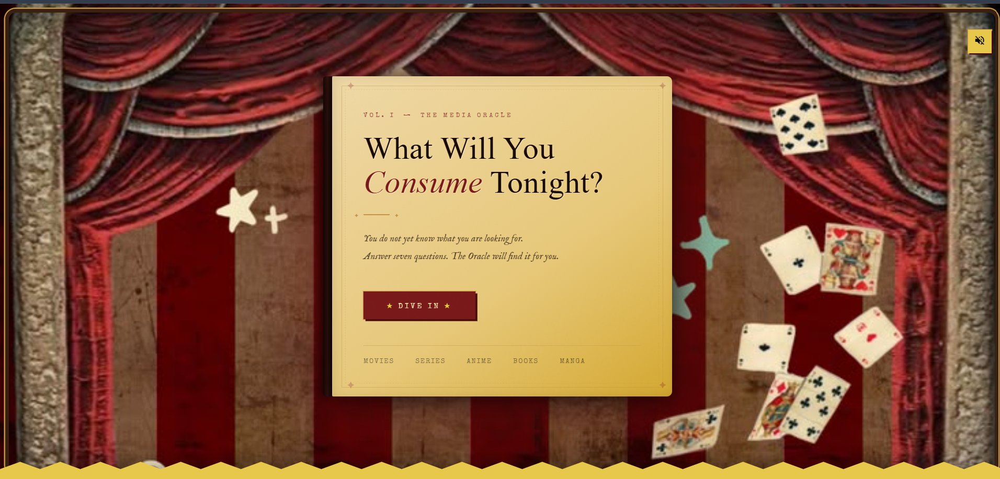
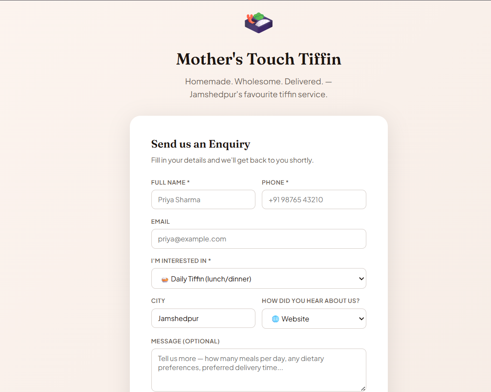

My Movie Mania
A personal movie tracker that lets you keep a diary of everything you've watched, want to watch, or loved. Powered by the TMDB API for rich metadata — posters, cast, ratings, and more.
- Track movies with personal diary entries and reviews
- Star-based rating system with watchlist management
- TMDB API integration for live metadata & posters
- MySQL backend with session-based auth

Mobile Reimbursement System
A clean, functional reimbursement portal designed for workplace use. Employees submit mobile bill requests through a simple form interface; admins get a dedicated panel to approve, reject, or manage access.
- Employee form interface for submitting reimbursement requests
- Admin dashboard with approval / rejection controls
- Role-based access control via Supabase
- Real-time status updates for submitted requests

The Investigation
A dark atmospheric mystery web app where players investigate real cold cases by exploring crime scene environments. Clues are hidden across room scenes — click hotspots to collect evidence and piece together what happened.
- Clickable hotspot system across hand-crafted scene images
- Three difficulty tiers with escalating case complexity
- Evidence collection and case dossier per investigation
- Smooth transitions powered by Framer Motion

Whimoracle
A quiz-based media oracle that reads your mood and conjures personalized recommendations across films, anime, and books. Draped in a vintage carnival and Victorian spiritualist aesthetic — because finding your next obsession should feel like a ritual.
- Mood-driven quiz engine with branching recommendation logic
- Pulls live data from TMDB, AniList, and Open Library APIs
- Gemini AI integration for nuanced, context-aware suggestions
- Fully responsive with cinematic dark-themed UI

Mothers Touch Tiffin
A hyper-local tiffin delivery platform that connects hungry customers with home cooks in the same area. Orders flow through a real-time pipeline — customer places order, cook prepares it, delivery partner picks it up.
- Three-role system: customers, home cooks, delivery partners
- Real-time order tracking and status updates
- Area-based cook discovery and menu browsing
- Supabase-powered auth and live database sync

Mothers Touch Tiffin — CRM
A full-stack Lead Management System built for Mother's Touch Tiffin, Jamshedpur. Designed to streamline customer inquiries and sales processes, featuring a lead listing dashboard, contact form, and status tracking.
- Lead Listing Table with search, filter by status/source, pagination
- Contact Form — public form + embeddable HTML snippet
- Status Updates: new → contacted → qualified → converted → lost
- Supabase-powered auth for ADMIN/s Access only

New Project
Something new is brewing — a creative experiment that I'm not quite ready to share just yet. Stay tuned, it's going to be fun.
- Currently in planning & design phase
- More details dropping soon on GitHub